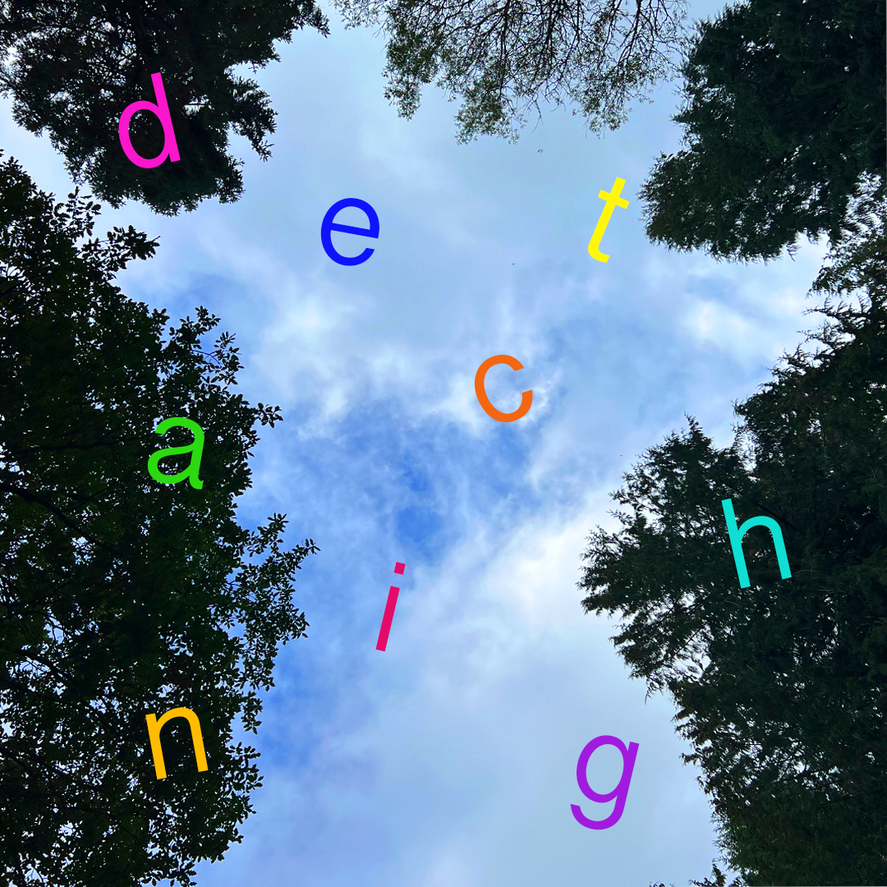
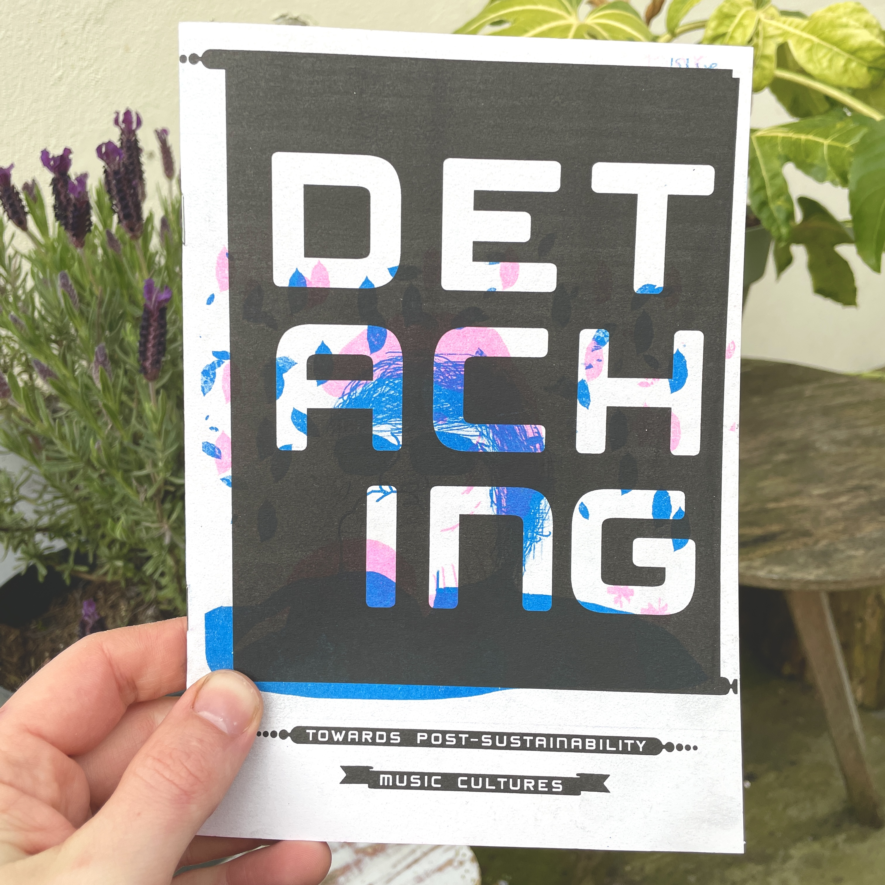
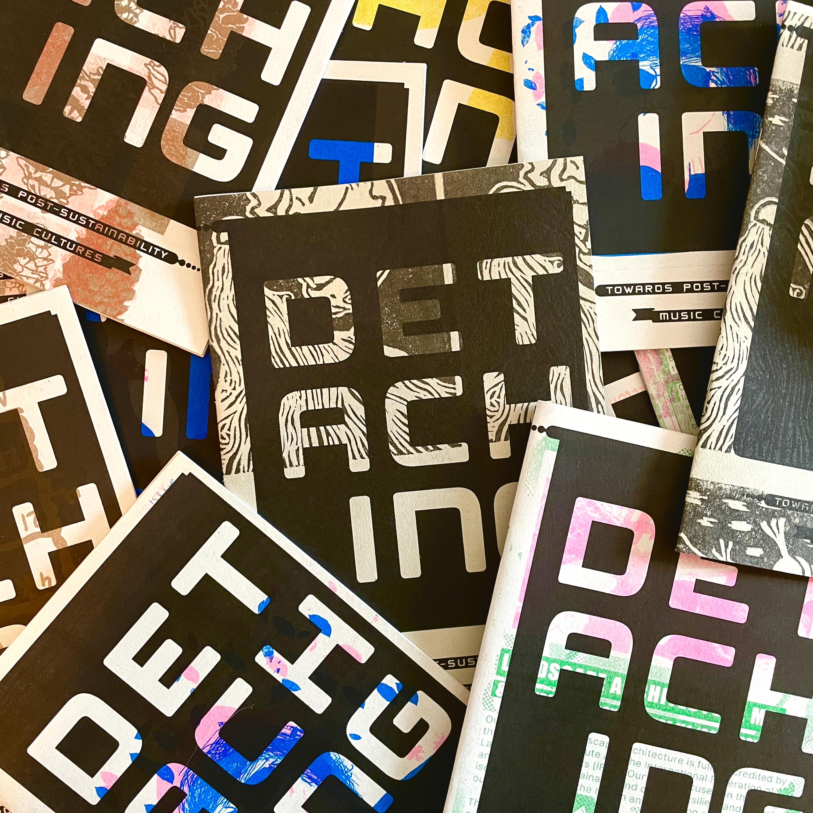
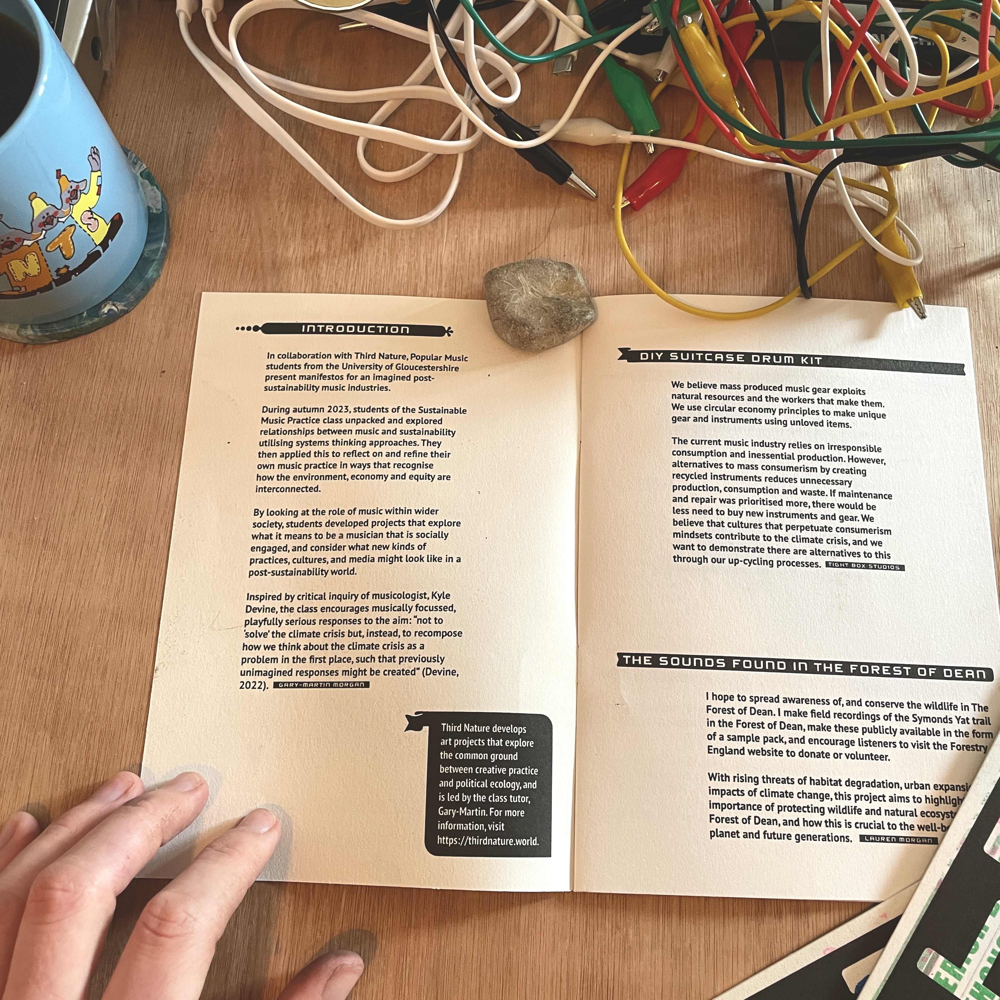

Detaching, 2023

Detaching is a playful exploration of imagined futures for the music industries, in collaboration with Popular Music students at the University of Gloucestershire. Detaching resulted in a co-created sample pack and a series of practice-based projects accompanied by short manifestos that present ideas for post-sustainability music cultures.
Selected manifestos have been curated as a zine, published by
Pitville Press.



Third Nature